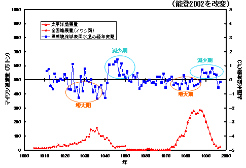
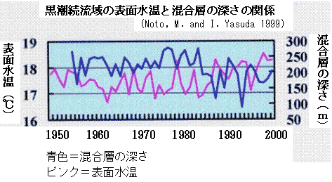

|
３）黒潮続流域の表面水温とマイワシとの関係 黒潮続流域の表面水温が低水温傾向である時期にマイワシの漁獲が増加しており、黒潮続流域の表面水温がマイワシ資源の変動に影響を与えている可能性が考えられます。黒潮続流域の表面水温が低下傾向の時期には混合層（MLD）の深化傾向が生じ、中・深層から窒素、リンなどの栄養が供給され、プランクトンの発生が多くなると考えられます。 黒潮続流域表面水温の経年変動とマイワシ漁獲量との関係 
 [前ページ] [次ページ] [1] [2] [3] [4] [5] [6] [7] [8] [9] 10 [11] [12] [13] [14] [15] [16] [17] |